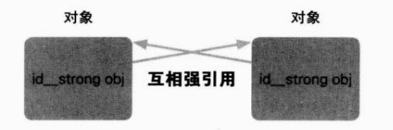
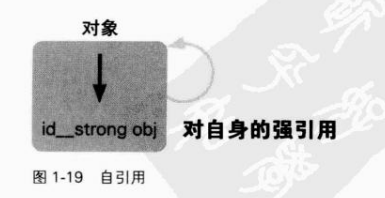
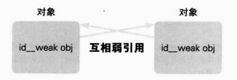

看起来好像通过__strong修饰符编译器就能够完美地进行内存管理
但是遗憾的是,仅通过
__strong修饰符是不能解决有些重大问题的
这里提到的重大问题就是引用计数式内存管理中必然会发生的“循环引用”的问题
如图
1-17所示
例如,前面出现的带有 strong修饰符的成员变量在持有对象时,很容易发生循环引用
@interface Test NSobject{
id __strong obj;
-(void) setobject:(id __strong)obj;
}
@end
@implementation Test{
-(id)init{
self = [super init];
return self:
}
-(void)setobject: (id __strong)obj{
obj_ = obj;
}
@end
以下为循环引用
id testo = [[Test alloc] init]; id testl =[[Test alloc] init]; [testo setobject: testl]; [testl setobject: testo]; }
为便于理解,下面写出了生成并持有对象的状态
id testo = [[Test alloc] init];/*对象A*/ /*test0持有Test对象A的强引用*/ id test1=[[ Test a1loc]init];/*对象B*/ /*test1持有Test对象B的强引用*/ [testo setobject: testl]; /*Tet对象A的ob成员变量持有Test对象B的强引用
*此时,持有Test对象B的强引用的变量为 *Test对象A的obj和test1
*/ [testl setobject: testo]; /*Test对象B的ob)成员变量持有Test对象A的强引用
*此时,持有Test对象A的强引用的变量为 *Test对象B的obj和test0 */ /* *因为test0变量超出其作用域,强引用失效, *所以自动释放Test对象A *因为test1变量超出其作用域,强引用失效 *所以自动释放Test对象B
*此时,持有Test对象A的强引用的变量为 *Test对象B的obj
*此时,持有Test对象B的强引用的变量为 *Test对象A的obj
*发生内存泄漏! */
循环引用容易发生内存泄漏
所谓内存泄漏就是应当废弃的对象在超出其生存周期后继续存在
此代码的本意是赋予变量 testO的对象A和赋予变量 testl的对象B在超出其变量作用域时被
释放,即在对象不被任何变量持有的状态下予以废弃
但是,循环引用使得对象不能被再次废弃
像下面这种情况,虽然只有一个对象,但在该对象持有其自身时,也会发生循环引用(自
引用)
如图1-19所示
id test =[[Test alloc] init]; [test setobject: test];
怎么样才能避免循环引用呢?看到 __strong修饰符就会意识到了,既然有 __strong,就应该有
与之对应的__weak
也就是说,使用__weak修饰符可以避免循环引用
__weak修饰符与__strong修饰符相反,提供弱引用
弱引用不能持有对象实例
我们来看
看下面的代码
id __weak obj = [[NSObject alloc] init];
变量obj上附加了__weak修饰符
实际上如果编译以下代码,编译器会发出警告
此源代码将自己生成并持有的对象赋值给附有__weak修饰符的变量obj
即变量obj持有对
持有对象的弱引用
因此,为了不以自己持有的状态来保存自己生成并持有的对象,生成的对象
会立即被释放
编译器对此会给出警告
如果像下面这样,将对象赋值给附有 __strong修饰符的
变量之后再赋值给附有__weak修饰符的变量,就不会发生警告了
{
id __strong obj=[[NSObject alloc] init];
id __weak obj1 = obj0:
}
下面确认对象的持有状况
{
/*自己生成并持有对象*/
id __strong obj0=[[NSObject alloc] init]:
/*
*因为obj0变量为强引用,
*所以自己持有对象
*/
id __weak obj1 = obj0:
/*obj1变量持有生成对象的弱引用*/
}
/*
*因为obj0变量超出其作用域,强引用失效,
*所以自动释放自己持有的对象
*因为对象的所有者不存在,所以废弃该对象
*/
因为带__weak修饰符的变量(即弱引用)不持有对象,所以在超出其变量作用域时,对象
即被释放
如果像下面这样将先前可能发生循环引用的类成员变量改成附有__weak修饰符的成
员变量的话,该现象便可避免
如图1-20所示
@interface Test NSobject id __weak obj_; -(void)setobject:(id __strong)obj; @end
__weak修饰符还有另一优点
在持有某对象的弱引用时,若该对象被废弃,则此弱引用将
自动失效且处于nil被赋值的状态(空弱应用)
如以下代码所示
id __weak obj1 = nil;
{
id __strong obj0=[[NSObject alloc] init];
obj1 = obj0:
NSLog(@"A: %@", obj1);
}
NSLog(@"B: %@",obj1);
此源代码执行结果如下:
A: <NSObject: 0x753e180> B:(nu11)
下面我们来确认一下对象的持有情况,看看为什么会得到这样的执行结果
id __weak obj1 = nil
{
/*
*自己生成并持有对象
*/
id __strong obj0=[[NsObject alloc] init];
/*
*因为obj0变量为强引用,
*所以自己持有对象
*/
obj1 = obj0;
/*obj1变量持有对象的弱引用*/
Nsog(@"A:%@”,obj1);
/*
*输出ob1变量持有的弱引用的对象
*/
}
/*
*因为ob0变量超出其作用域,强引用失效,
*所以自动释放自己持有的对象
*因为对象无持有者,所以废弃该对象
*废弃对象的同时,
*持有该对象弱引用的obj1变量的弱引用失效,ni1赋值给obj1
*/
NSLog(@"B:%@”,obj1);
/*
*输出赋值给obj1变量中的nil
*/
像这样,使用__weak修饰符可避免循环引用
通过检查附有__weak修饰符的变量是否为
可以判断被赋值的对象是否已废弃
遗憾的是,__weak修饰符只能用于iOS5以上及 O X Lion以上版本的应用程序
在iOS4
以及 OS X Snow Leopard的应用程序中可使用__unsafe_unretained修饰符来代替